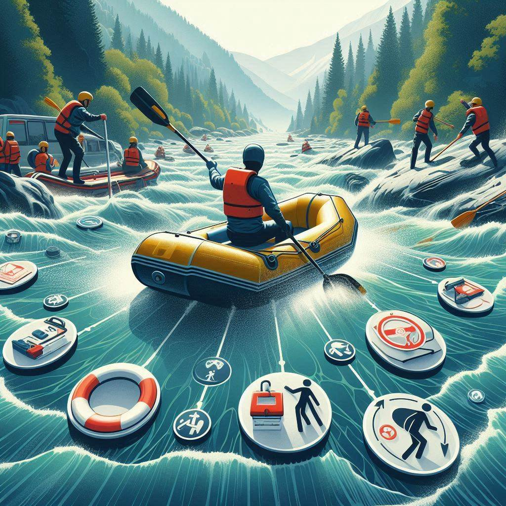
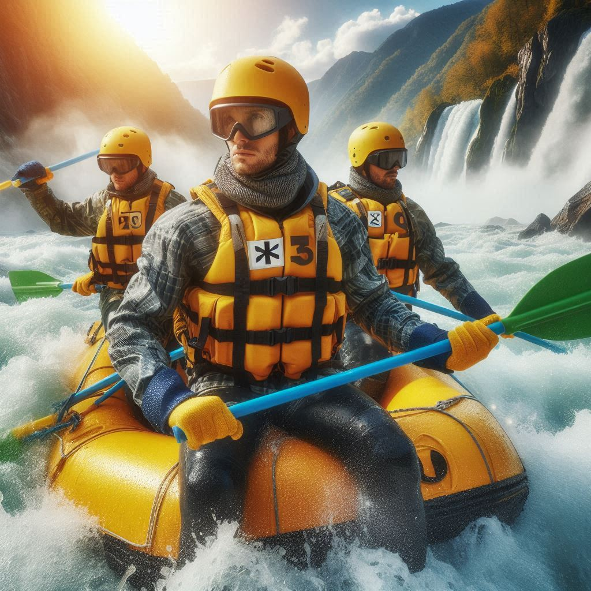
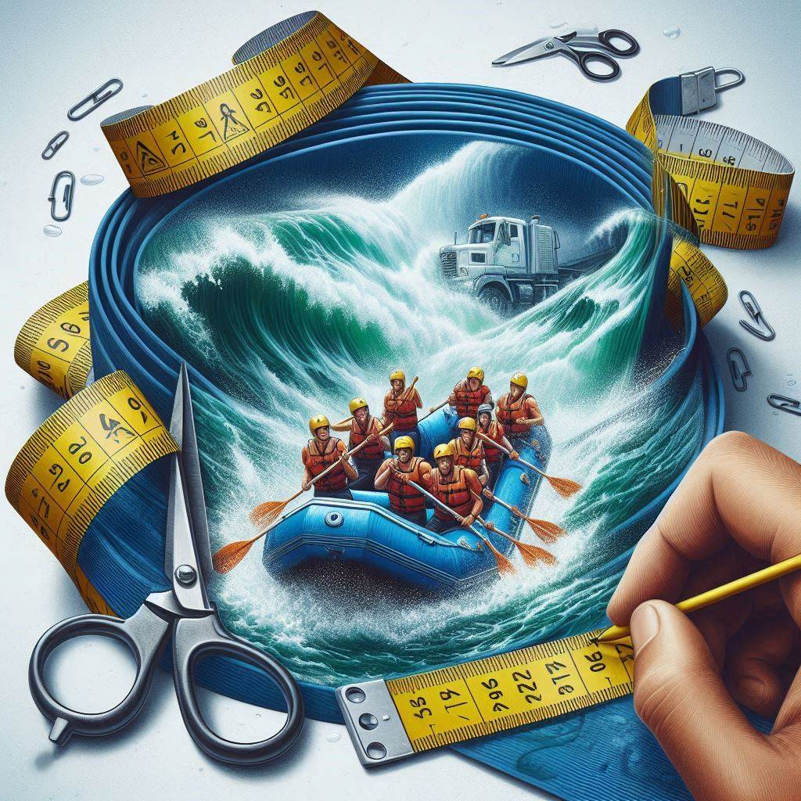

FAQ
Find Frequently asked questions
What safety measures should I follow while white water rafting?
Safety is paramount in white water rafting. Always wear a life jacket and a helmet, regardless of your swimming ability. Listen carefully to your guide's instructions and commands, as they are trained professionals who understand the river's dynamics. Make sure to wear appropriate clothing—quick-drying fabrics and secure footwear are ideal. Never go rafting alone; always be part of a guided group. Lastly, be aware of your physical limits and inform your guide of any medical conditions or concerns you may have before setting off.
How do I paddle correctly while white water rafting?
Paddling correctly is crucial for navigating the rapids and ensuring a smooth rafting experience. Hold the paddle with one hand on the top (the T-grip) and the other hand on the shaft. Keep your arms slightly bent and your upper body engaged. When your guide shouts "forward paddle," reach forward, submerge the blade fully, and pull it back towards your hip. For a "back paddle," do the opposite: push the paddle from your hip forward. Synchronize with your team’s rhythm to maximize efficiency and control. Your guide will provide specific instructions tailored to the river’s conditions.
What should I expect on my first white water rafting trip?
Your first white water rafting trip promises to be an exhilarating adventure. After arriving at the rafting center, you’ll receive a safety briefing and gear, including a life jacket, helmet, and paddle. Your guide will explain basic paddling techniques and commands. Once on the river, expect a mix of calm waters and thrilling rapids. The intensity of rapids can vary, but your guide will steer you through safely. Along the way, you’ll experience breathtaking scenery, teamwork, and possibly some splashes of cold water. Remember to relax, have fun, and embrace the adventure.